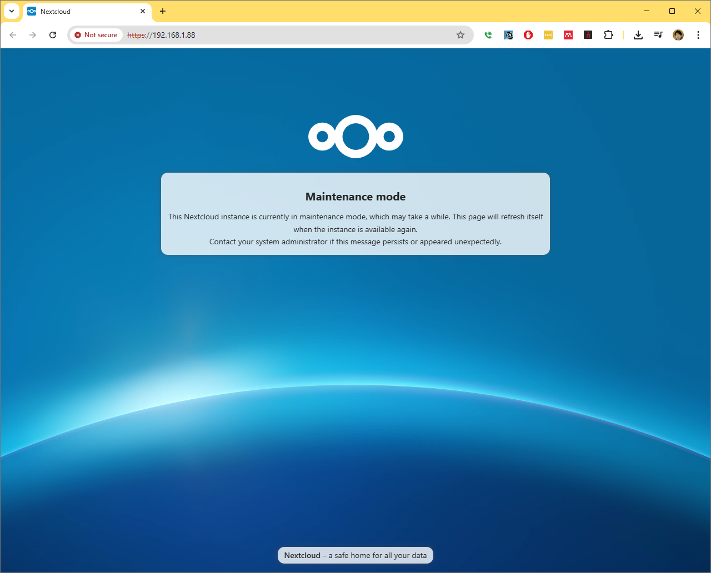

How to install NextCloud as VM in Proxmox with data on NFS#
This document details how to install NextCloud as a virtual machine inside a Proxmox installation, where the data shared via NextCloud resides on a NFS share from a TrueNAS.
Background and Rationale#
Self-hosting home servers has many advantages, such as having your own cloud-based storage with very high storage quota. One way to achieve this is to host several cloud-based applications using Proxmox, thereby having everything running on single computer hardware.
Proxmox#
Proxmox Virtual Environment (Proxmox VE) is an open-source server management platform for virtualization, allowing a user to host virtual machines and Linux Containers (LXC) with a web-based interface.
Upgrade NextCloud manually#
bash -c "$(curl -fsSL https://raw.githubusercontent.com/community-scripts/ProxmoxVE/main/vm/nextcloud-vm.sh)"
How to move NextCloud data to another director#
Using Proxmox, open a console for the NextCloud VM
Issue the following command to start the maintainance mode. Note in my NextCloud install, NC was installed to
/var/www/nextcloud/
sudo -u www-data php /var/www/nextcloud/occ maintenance:mode --on
At this stage, if you try to load the webpage for NextCloud, you should see the message above.
Stop the webserver Apache2
systemctl stop apache2
At this stage, the webpage for NextCloud still stop functioning.
Using Proxmox, open a console for the TrueNas VM.
Inside the TrueNAS VM console, copy the file from the NextCloud data directory to another localtion of your choice
sudo cp -a /mnt/NAS_oldie/nextcloud_data temp
Notice the archieve mode for cp.
NextCloud has the default user of www-data, thus one needs to make sure the ownership is maintainedl
sudo chown -R www-data:www-data temp/nextcloud_data
edit the configuration
systemctl restart apache2 php*
sudo -u www-data php /var/www/nextcloud/occ maintenance:mode --off
{kind=link}